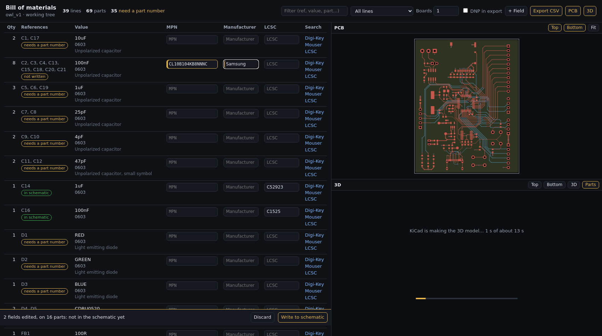

Bill of Materials¶
kigit makes your board's bill of materials when you ask for it: in the GUI with BOM in the header, or with kigit bom on the command line. Nothing runs in the background.

The board beside the list¶
On the right, the board twice: PCB (drawn from the board file itself: outline, copper on each layer, pours, tracks, vias and pads) and 3D (the same model as the 3D view).
- Hover a line: its parts light up on both, with a box around each, and the rest fades.
- Hover a part on either: its line lights up (the list scrolls to it), with a tooltip saying what it is.
- Click a line to keep its parts lit while you look around (click again to let go); the PCB zooms to them if they're off screen.
- Select several, like files in a file manager: Ctrl+click (Cmd on a Mac) adds or removes a line, Shift+click takes every line from the last one you clicked, in the order shown (Ctrl+Shift adds the range to what's selected). Clicking a part on the PCB or the 3D board selects its line (Ctrl or Shift+click for more). All their parts stay lit; a bar under the list counts them, and Esc or Clear selection lets go. With several lines selected, ticking a tracker box on one of them ticks (or unticks) it for all of them, and in Assemble, placing a part on one places every selected line's parts (DNP lines are left out).
- PCB: scroll to zoom, drag to pan, Top / Bottom show or hide each side, Fit. 3D: drag to turn, as in the 3D view.
- Resize the panels by dragging the line between the list and the board (or between two of PCB, 3D and Notes); double-click a line to put it back. Sizes are remembered in your browser.
- List, PCB and 3D in the header show or hide each panel, and Hide on a pane's own bar hides it too. One always stays shown (the list alone, the board alone, any mix). Remembered in your browser.
- Columns picks which columns the list shows: Qty, Value, each part number field, Mouser and Price (after Look up) and the search links. References always stays. The button is lit while some are hidden; Show all brings them back. Remembered too.
The PCB shows straight away. KiCad makes the 3D model after the page opens (seconds on a small board, a minute or more on a big one; a board already made is reused), with its progress in the pane. Without KiCad, the 3D pane says so and the rest works.
What's on a line¶
Parts with the same value, footprint, part numbers and DNP state share a line, with their quantity and references (in order: R2 before R10). Left out: power symbols, # references and parts marked Exclude from bill of materials. A part in several units (U1A, U1B) counts once.
Part numbers are read from the fields most people use, whatever the spelling: MPN (or Manufacturer Part Number, MFR PN...), Manufacturer, DigiKey, Mouser and LCSC (LCSC Part #...). Do-not-populate parts are those with KiCad's DNP flag, a DNP field, or the value DNP (as older projects did).
Finding parts¶
Each line has Digi-Key, Mouser and LCSC links that open the site's search for:
- the line's own part number at that site, or its MPN;
- otherwise, for chip resistors, capacitors, inductors, ferrites and LEDs, the value and package: "10k 0603 resistor" (
10kR,5k1and4R7are written the way distributors search:10k,5.1k,4.7 ohm); - otherwise the value, which for an IC is usually its part name.
The links only open the sites in your browser. A part number you've typed in (not written yet) searches for itself.
Stock and prices¶
Look up on the BOM page (or kigit bom --lookup) asks Mouser and Digi-Key about each line: stock, price for the quantity you need, lead time and lifecycle (obsolete, end of life...), and for a part that's short or ending, what Digi-Key suggests instead. It asks every site you have a key for. It's the only time kigit contacts a parts site, and only when you press it.
Keys¶
Both are free. The first Look up asks for them, or press Keys on the BOM page.
- Mouser: in your Mouser account, My Account → APIs, ask for a Search API key.
- Digi-Key: on developer.digikey.com, sign in, make an organization, then a Production app with Product Information V4 ticked. Its client ID and client secret are what kigit needs. Pick which Digi-Key site the prices come from (digikey.com in USD, digikey.co.uk in GBP, digikey.de in EUR...).
On the command line:
kigit bom --set-key mouser # paste the key, Enter
kigit bom --set-key digikey # the client ID, Enter, the secret, Enter, then optionally "UK GBP", Enter
kigit bom --keys # which sites have a key (never the keys)
They're kept in parts-keys.json in the app folder, readable only by you. Environment variables win when set: KIGIT_MOUSER_API_KEY, KIGIT_DIGIKEY_CLIENT_ID and KIGIT_DIGIKEY_CLIENT_SECRET (and KIGIT_DIGIKEY_SITE, KIGIT_DIGIKEY_CURRENCY). Keys go to curl (which kigit uses to talk to the sites) on its standard input, never on a command line, and they aren't written to the logs.
Looking up¶
kigit bom --lookup # a table per site
kigit bom --lookup --boards 25 # price 25 boards
kigit bom --lookup --site digikey # one site
kigit bom --lookup --json # everything, for scripts
kigit bom --lookup --refresh # ask again, not from the last day's answers
On the page, Look up prices Build qty boards and adds two columns per site: the part (its number, stock, lead time and lifecycle; SHORT in red when the site has too few) and Price (the total, and how many at what each). The header sums up each site. A line without a part number shows N choices: open them and press Use to put that MPN and manufacturer in the line's drafts, then write them like any other edit. Shift+click Look up to ask again instead of using the last day's answers. Change Build qty and the page says to look up again (from the kept answers, so it's quick). Hide the columns you don't want with Columns.
- A line with a part number (the site's own number, else its MPN) gets that exact part. If the site sells it in several packagings (Digi-Key's cut tape and reels), the one with enough stock comes first, then the cheapest.
- A line without one (most resistors and capacitors) gets up to five choices from searching "10k 0603 resistor", ranked by stock, lifecycle and package. kigit doesn't pick one for you: put the one you want in the MPN column.
- SHORT means the site has fewer than you need (the line's quantity ×
--boards). The price is for what you'd buy: at least the minimum, in its multiples (a reel is a whole reel), at that quantity's price break. - Short or ending (obsolete, last time buy, not for new designs): Digi-Key's substitutes show as N instead, marked Direct (a drop-in) or Upgrade and the like, each with its stock and price and a Use button.
- DNP lines aren't looked up.
Answers are kept for a day (parts-cache.json in the app folder): asking again is instant and free. Mouser allows 30 searches a minute and 1000 a day, so kigit waits 2 seconds between them; Digi-Key allows about 120 a minute and 1000 a day (0.6 seconds). A refused key or a site's daily limit stops that site with a message, instead of trying every line; the other site carries on.
Editing part numbers¶
The BOM is also where part numbers go into your schematic, without hunting for parts in KiCad: hover a line and you see exactly which parts it is, on the board, while you type.

- The columns are MPN and Manufacturer, Digi-Key, Mouser and LCSC when your project uses them, and any field you add with + Field (Supplier, Tolerance...). Each uses the name your project already uses for it ("LCSC Part #", "Part Number"...), so nothing ends up under two names.
- Rename a column you added (a field or a tracker): double-click its title, or ✎ beside it in Columns. If parts already have that field in the schematic, kigit renames the field on them too (after asking; the values stay, only the name changes, and Undo puts it back). The project's own part number columns (MPN, Manufacturer, Digi-Key, Mouser, LCSC) keep their names.
- Type in a cell: it's a draft (marked), saved as you type in
kigit-bom.jsonnext to the board (commit it to share drafts). A line's value applies to every part on it. Long part numbers wrap onto more lines so you can read them whole; Enter leaves the cell (a field is one line of text). - Column widths: drag a column header's right edge. Double-click the edge to put that column back to its own width; Reset widths (in the header while any is changed, and in Columns) puts them all back. Remembered in your browser. When the columns are wider than the list, it scrolls sideways.
- Write to schematic puts the drafts into the schematic files; Discard drops them; Undo puts the files back as they were before the last write.
kigit is not a schematic editor, and this can't change your design:
- It only writes part information fields. KiCad's own fields (Reference, Value, Footprint, Datasheet, Description, and its internal ones) are refused, and it never touches the board file, the wiring or anything else.
- Each field is the smallest change to the file: an existing value replaced in place, or a new field copied from the part's own hidden Footprint field (so it's hidden too, in your file's KiCad format, KiCad 6 to 10). The rest of the file stays byte for byte, so
git diffshows only those lines. - Before saving, kigit reads the edited schematic back and checks it's the same design: every net, wire, label and part (reference, value, footprint, position) unchanged, and the fields read back as written. If anything differs, nothing is written.
- If KiCad has the schematic open, kigit says so first: save there, or write anyway and let KiCad reload it.
- The files it replaced are kept in
.kigit/bom-backup/next to the schematic (not in git), which is what Undo uses.
Only the working tree can be edited: a commit's BOM is read-only.
Builds¶
A build is a batch of boards you're making from the design: Proto run, 3 boards or December run, 50 boards. Pick one in the Build list next to the title (+ New build… makes one); Design only is the schematic's parts on their own, as the BOM opens the first time.
- A build keeps its number of boards (the Boards box, where Build qty is without a build; saved as you type) and the revision it's for: the working tree (and the commit it started from) or the commit you opened the BOM at.
- Each build is a folder next to the board,
kigit-builds/<name>/build.json, in git with the project. ⋯ renames it (the folder follows) or deletes it (git still has it if you committed it). - The build you picked is remembered for that board in your browser: it's still there when you reload or open the BOM again, until you pick another.
- What's bought belongs to a build: its trackers and carts are kept in its
build.json, so each batch starts fresh. With Design only there are none (+ Tracker and Import cart ask you to pick a build). - Buy / Assemble (beside the build) switch between what to buy for it and its boards; the view, and the board you're on, are remembered.
Assembling boards¶
Assemble is for building the boards one by one, each with its own placement sheet: Board → Start board #1 (then #2...: a board is only made when you start it, so a 50-board build doesn't fill up with empty ones; each is kigit-builds/<build>/boards/<n>.json).
- Placed on #n (right after Value): the line's parts as chips; click one when it's on the board (all / none for the whole line). Its ▾ filters Placed, Not placed yet, Partly placed.
- Each part you place takes one out of your inventory (when it's in it); unticking it puts back exactly what was taken. A part that isn't in your inventory is still marked placed.
- Placed on the PCB and 3D panes colours that board's parts: green placed, red still to place.
- A board is done by itself when every part (not DNP) is placed, with the time; you can also set it. Notes keeps a line about the board (a bodge, who has it). Delete forgets it (its parts aren't put back: they're on the board).
- In Buy, what's placed no longer counts as needed, and the header counts the boards still to build.
Buying for a build¶
With a build picked (and your inventory chosen), the list shows, per line:
- In stock: what your inventory has.
- Ordered: what the build's carts have that hasn't arrived yet.
- To buy: what's left: needed (per board × boards, less what's placed already) − in stock − ordered; ✓ when nothing is. Its ▾ filters Still to buy / Covered.
The header says how many boards your stock covers ("stock covers 37 of 50 boards", and how many with what's ordered); hover it to see the scarcest line. Your inventory is shared by every build and project, so another build's needs can draw on the same parts.
To order just what's missing: Export CSV ▾ → Which lines: Only what's still to buy (and that many), then the LCSC or Mouser file: each line with its To buy quantity.
When a cart arrives: Import cart ▾ → Carts and unmatched rows… → Mark received. Each row's quantity goes into your inventory CSV (found by its MPN or site number, or as its line's passive by kind, value and package; a row for anything new to you), and the cart stops counting as ordered. A line that matched the cart but had no part number yet gets the cart's (MPN, manufacturer, LCSC or Mouser number) as drafts, so it finds its stock; write them to the schematic, or not. Undo received takes exactly those quantities back out.
Inventory¶
Your inventory is a CSV file of yours, wherever you keep it (a synced folder, its own git repo, a USB stick), shared by every project. kigit reads it to show what you have, and changes only its Quantity (and adds rows for parts new to you). It only remembers where the file is, so removing kigit or its app folder loses nothing: choose the file again.
Inventory in the BOM's header: Choose your inventory file… (browse to it) or New inventory file… (an empty one with kigit's columns, where you say). Then it lists your parts; type a new quantity and it's written into the file when you leave the box. Edit anything else in a spreadsheet: kigit reads the file again when you come back to the page.
The format: one row per part, a header row first, columns in any order (names matched loosely):
| Column | ||
|---|---|---|
Quantity |
needed | how many you have |
MPN, LCSC, Mouser, Digi-Key |
one of these... | what the part is |
Kind, Value, Package |
...or these, for passives | resistor, 10k, 0603 (resistors, capacitors, inductors and ferrites without a part number) |
Manufacturer, Description, Location, Notes, anything else |
yours | kept as they are |
MPN,Manufacturer,LCSC,Mouser,Kind,Value,Package,Quantity,Location,Notes
RC0603FR-0710KL,YAGEO,C98220,,resistor,10k,0603,400,Drawer 2,
STM32F103C8T6,STMicroelectronics,,511-STM32F103C8T6,,,,6,Box A,two have bent pins
,,,,capacitor,100n,0603,1200,Drawer 1,mixed brands
- In stock (a column, once you've chosen the file): each line's stock against what you need (quantity × Build qty), green or red, found by its MPN, else LCSC / Mouser / Digi-Key number (drafts count), else as a passive by kind, value and package (
10k,10K,10kΩand4k7/4.7kare the same). ✎ changes the count; + add puts a line's part in your inventory. Its ▾ filters: Enough in stock, Not enough, Not in the inventory. - Rows kigit can't use (no quantity, nothing saying what the part is, the same part twice) are listed in the dialog and left alone.
- Every change re-reads the file first (so edits made elsewhere aren't lost), goes through a temporary file, and keeps the previous version as
<name>.csv.bak. - Windows: if the file is open in Excel, Excel locks it and kigit can't save; close it there and try again.
- Received carts add to it (Buying for a build); parts placed on a board take from it (Assembling boards).
Notes about parts¶
Why did you pick that regulator, that crystal, that 0603 over a 0402? + Notes under a line's references keeps the reason with the part.
- + Notes opens the Notes panel where the PCB was (the PCB button brings it back) with that line picked. New note makes a note about it in
reviews/BOM/, named after the part ("1k (R1, R3, R5)"), started with the parts, value, MPN, manufacturer, footprint and the commit you're on, and a Why this part heading to write under. - A line with notes shows 📝 N instead: press it and its newest note opens. Clicking a line (to light it up) picks it in the Notes panel too.
- It's the Notebook: the same editor, saved as you type, the same files. A BOM note is pinned to every part on its line, so it's also one of the notes about R1 when you pin R1 in the viewer, it's on the Reviews page, and search finds it.
- Pin this line pins the picked line's parts to the open note (for a note about several lines); Pin it here pins what's selected in kigit's main tab, as in the Notebook. Click a pin to show it in kigit's tab.
- Commit adds a line to the note for a commit you pick from the history (its short hash, date and subject): when the part changed, when it was ordered... In the note's Preview, click the hash to see that commit's changes in kigit's tab (see the Notebook).
- ↗ New tab opens the notes in a tab of their own, laid out wide; the panel closes, and + Notes on the BOM page then goes to that tab. Hide (or the Notes button) hides the panel.
What's ordered: importing carts¶
Fill your carts at Mouser and LCSC (the CSVs from Export CSV upload straight into their BOM tools), then bring each cart back into kigit to see what's ordered.
Importing a cart¶
- Pick the build you're buying for.
- Export your cart from the site: Mouser gives an .xls, LCSC a .csv (.xlsx works too).
- Click Import cart ▾ → Mouser cart… or LCSC cart… and choose the file.
The cart shows as a chip beside Import cart, like LCSC cart · 7 rows:
- Click the chip to see its rows.
- ✕ removes the cart from the build.
- Importing a site's cart again replaces it (one cart per site per build).
How rows are matched to lines¶
kigit tries, in this order:
- The references in the row's Customer #. kigit's own export puts them there, so this is the surest.
- The site's part number (Mouser or LCSC).
- The MPN.
Part numbers you've typed but not yet written to the schematic count too.
Rows that match no line¶
Usually passives that don't have a part number yet. An amber bar under the header tells you how many there are: they don't count as ordered until each has its line.
- Click Match them… in the bar.
- Rows marked ★ have a line suggested by kigit. Click Accept, or Accept all suggestions.
- For the rest, pick the line from the row's list.
How suggestions work:
- From the row's description, by kind, value and package: "MLCC … 0.1uF X7R 0603" is your 100nF 0603 line.
- Values are compared as numbers: 0.1µF = 100nF, 4k7 = 4.7k, 32.768kHz = 32k768.
- Or by the part's name inside the row's part number.
- Only when one line fits clearly better than the rest; otherwise there's no suggestion.
With Keep each row's part numbers ticked (the default), the row's MPN, manufacturer and site number become that line's drafts, so it matches by itself next time. Let go undoes a match.
The Ordered column¶
What the carts hold for each line against what you need (quantity × the build's boards):
- Green: enough. Red: not enough.
- Each site's share is shown, like Mouser 10 · LCSC 5.
- Its ▾ filters: Enough, Not enough, Not in a cart, In the Mouser cart, In the LCSC cart.
On the board¶
Ordered in the PCB and 3D panels' bars colours every part, with a count on the button:
- Green: the carts cover it.
- Red: they don't.
So you can see at a glance that everything's ordered before you check out. Parts without a 3D model show as a flat tile over their pads.
When a cart is short, each board still needs every position, so the first positions by reference are filled first. For example, 10 capacitors for a line of four (C1 to C4) on 3 boards is 3 per board: C1, C2 and C3 are green, C4 is red.
When the parts arrive¶
Mark received (click the cart's chip) adds the cart to your inventory, and it stops counting as ordered. See Buying for a build. Removing a received cart leaves its parts in your inventory.
Filtering¶
Every column you can filter has a ▾ in its header; filters add up, so Placed: not done plus Carted: done plus Mouser: short of stock shows exactly those lines.
- Trackers: Done, Not done, Partly done (DNP lines aren't part of a build, so they're left out).
- References, Value and the part number columns (and fields you added): Contains... (type), Not empty, Empty: MPN: Empty is what still needs a part number.
- Each site's column (after Look up): Found, Short of stock, Ending (obsolete, last time buy...), To choose, Not found, Error or skipped.
- With a build: In stock (Enough, Not enough, Not in the inventory), Ordered (see above), To buy (Still to buy, Covered), and in Assemble Placed (Placed, Not placed yet, Partly placed).
A filtered column's ▾ is lit. Clear filters (in the header while any is on) shows every line again. The search box and Show work on top of them. Filters last until you reload the page.
Tracking a build¶
+ Tracker adds a tick column of your own to follow a build along: Carted, Ordered, Received, Placed, Tested, whatever your steps are.
- Tick a line when it's done. Its header counts the lines done (3/12, green when all are). DNP lines don't count.
- Ticks are kept per part (R1, R3...), so they stay right when a line gets a part number or lines regroup. A line where only some parts are ticked shows a half-ticked box (hover it to see which).
- Filter by them with the ▾ in their header: Done, Not done or Partly done (see Filtering).
- Like any column, a tracker can be hidden or resized. Columns → × removes one with its ticks.
- Export CSV includes them (yes, partly or empty).
Trackers belong to the build you've picked: they're kept in its kigit-builds/<build>/build.json (commit it to share progress), never in the schematic: they're about that batch, not the design. That's the difference from + Field, whose values get written into the schematic. With Design only there are none.
Exporting¶
Export CSV ▾ asks which file you want:
- LCSC BOM tool (upload it at lcsc.com/bom): LCSC's template columns: Quantity, Manufacture Part Number, Manufacturer, Description, LCSC Part Number, Package and Customer Part Number (the references, shortened to fit: "R1 R3 R5 +4"). Every line goes in: LCSC matches by its own number, then the MPN, then the description.
- Mouser BOM tool (upload it under BOM Tool in your Mouser account): Mouser Part Number, Manufacturer Part Number, Manufacturer Name, Customer Part Number, Description and Quantity 1. Mouser needs a Mouser number or an MPN, so lines with neither are left out, and the page says which.
- All columns: quantity, manufacturer, MPN, Digi-Key, Mouser and LCSC part numbers, references, value, footprint, fields you added and your trackers. For Digi-Key's BOM Manager (it lets you match up the columns) or a spreadsheet.
Which lines (at the top of the menu, remembered) picks what goes in, whichever file you choose:
- All lines.
- Only the lines shown: what the search box, Show and the column filters leave, so any filter works, e.g. MPN: Not empty plus Mouser: Found.
- Not Carted yet (one for each of your trackers): to order just what isn't in the cart, or hasn't arrived.
Each shows how many lines it has. They use what's on screen, drafts included, and Build qty (how many boards you're building) multiplies the quantities. LCSC's and Mouser's files leave DNP parts out; DNP in export puts them in All columns. Both sites let you check the columns when you upload, if one isn't picked up by itself.
Notifications and the log¶
The BOM page has kigit's bell (🔔) and Log too, at the end of its header, so you see what's happening without going back to kigit's window.
- Anything that goes wrong (a cart file that can't be read, the inventory locked by a spreadsheet, a write the schematic refused, a Look up that stopped) is a notification, "BOM: ..." with why, as well as the message on the page. The bell shows how many you haven't seen, the same count as kigit's own bell; opening it on either page marks them seen on both.
- What got done is listed too, without counting as a problem: a cart imported (and rows that matched no line, with the table), a cart received, part numbers written into the schematic, a Look up finished, a board done, a build made.
- Log opens kigit's session log, live, in a tab of its own. Everything above is in it, with the BOM page's own script errors if it ever has any, for reporting a problem.
Which revision¶
The working tree by default (the files on disk, saved or not committed). Tick one commit in the commit list first to get that commit's BOM instead.
From the command line¶
kigit bom # the project in this folder, as a table
kigit bom HEAD~3 # at a commit
kigit bom --csv -o bom.csv # CSV
kigit bom --json # everything, with the search links
kigit bom path/to/x.kicad_sch # a schematic, .kicad_pro, .kicad_pcb or folder
kigit bom --write edits.json # set part information fields (see below)
kigit bom --restore .kigit/bom-backup/20261118-204925-877 # undo a --write
--write takes a list of {"refs": ["R1", "R2"], "field": "MPN", "value": "RC0603FR-0710KL"} (or - to read it from stdin), or {"refs": [...], "field": "Voltage", "rename": "Voltage rating"} to rename a field on the parts that have it, with the same rules and checks as the page, and prints what it wrote and where the backup is. --force writes even when KiCad has the schematic open.
Without git it reads the files on disk; a revision then is an error.